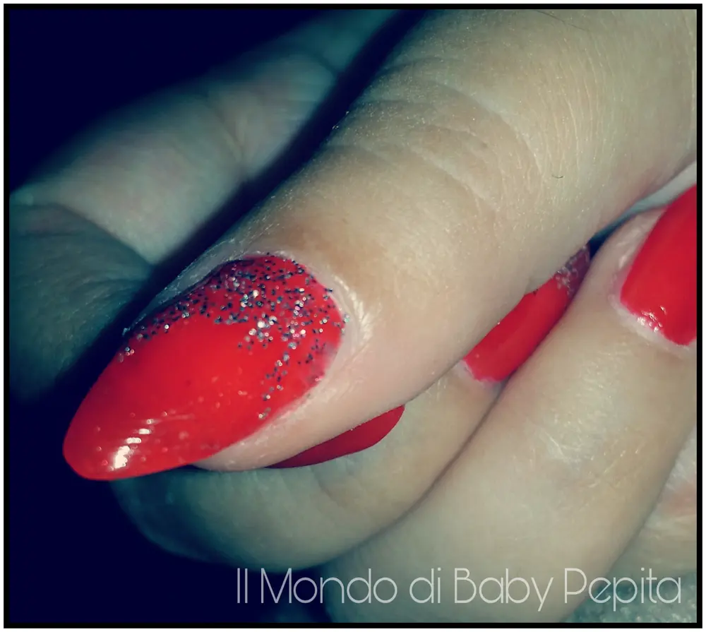
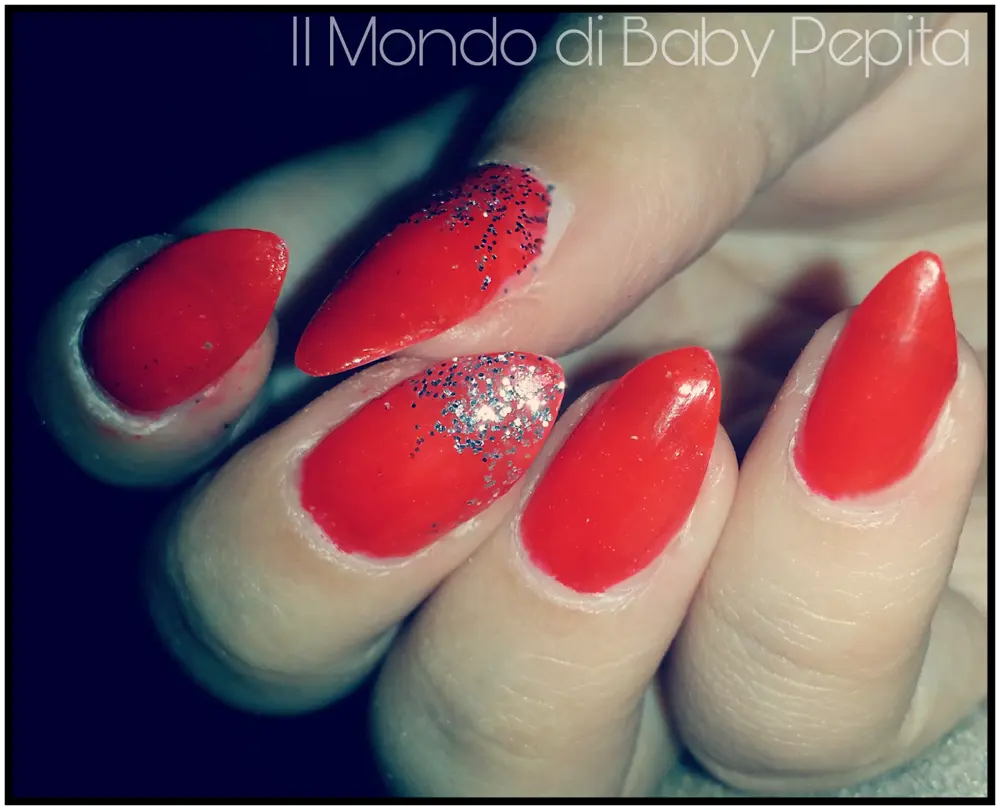
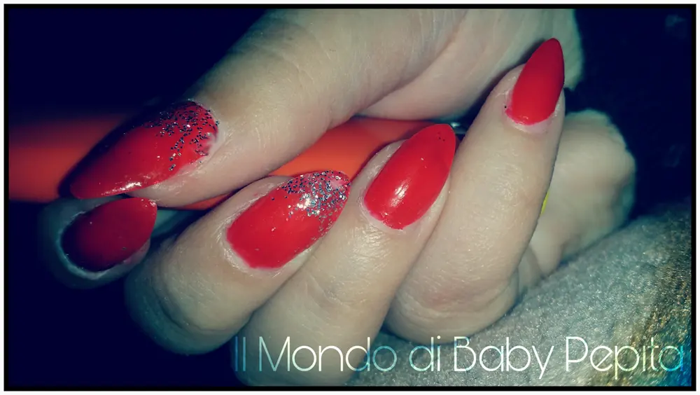

il rosso e la mia proposta unghiette 2016
Salveeeee Finalmente mi sono decisa anch'io a fare un qualcosa che riportasse al periodo: Natale! Ebbene sì, quest'anno, come ho anche già accennato nella mia pagina Facebook, l'aria e l'atmosfera natalizia non la sento particolarmente. Sarà che è un periodo un pò strano ma non mi sento a natale; e come tale ho tardato anche nella mia proposta di una nail art che potesse ispirarvi. Ho preferito però comunque dedicare 10 minuti alle mie unghiette e fare una semplicissima nail art che non fosse ne eccessiva e ne tanto meno anonima di tema.

Ho usato ovviamente il rosso, colore predominante del natale e poiché non volevo pupazzi di neve, fiocchetti e alberelli, ho solo usato un semplice glitterio qua e là.

L'effetto natalizio c'è e poi cosa più importante è che chi come me ha avuto poco tempo per dedicarsi alla manicure e al benessere del corpo ci vogliono veramente 10 minuti contati per sembrare in tema natalizio in modo semplice e veloce!Chiamiamola flash nail :D#FlashNailDetto ciò spero sia di vostro gradimento (ah, è un pò imperfetta ma fa tutto parte della velocità ahahah ).

seguitemi sui miei social:FACEBOOKINSTAGRAMTWITTERYOUTUBE